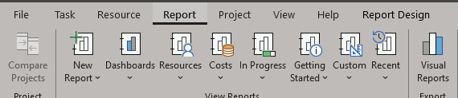
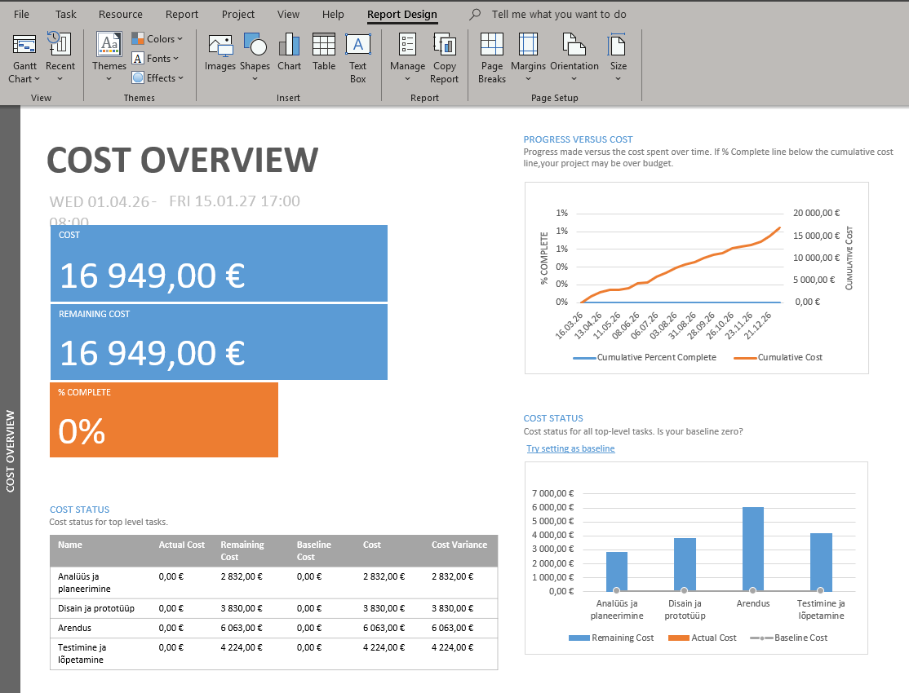
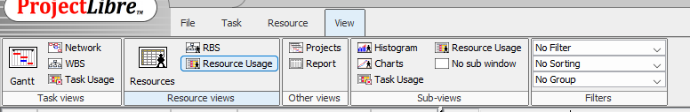
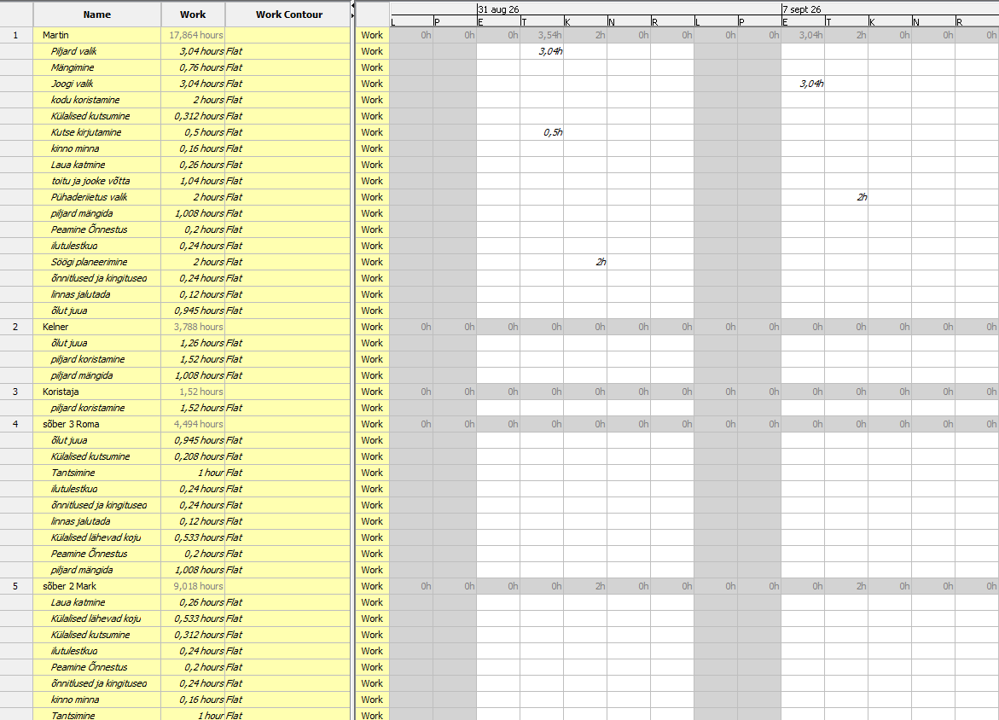

Mis on diagrammid ProjectLibre?
Diagrammid ProjectLibre’is on visuaalsed tööriistad, mis aitavad projekti paremini mõista ja hallata, näidates ülesannete ajakava, kestust ja omavahelisi seoseid, näiteks Gantti diagramm kuvab millal ülesanded algavad ja lõppevad ning võrgudiagramm näitab ülesannete järjekorda ja sõltuvusi, aidates seeläbi näha projekti struktuuri, jälgida edenemist ja tuvastada võimalikke probleeme ajakavas.
1. Gantti diagramm programmis ProjectLibre
GANTT-diagrammi vaatamiseks tuleb minna vahekaardile „Task“ ja seejärel „Gantt“

2. Gantt diagramm
Nüüd avaneb teie projekt koos Gantti diagrammiga, kus saate seadistada ülesannete ja allülesannete aega ning vaadata ajakava paremal ja päevade arvu

3. Resource diagramm programmis ProjectLibre
Ressursside graafikuid vaadata saate, kui lähete vahekaardile „Views“ ja sealt „Resource Usage“.

4. Resource usage diagramm
Nüüd kuvatakse teile kõik teie loodud materiaalsed ja tavalised ressursid, nende tööaeg ning millistes ülesannetes nad osalevad.
